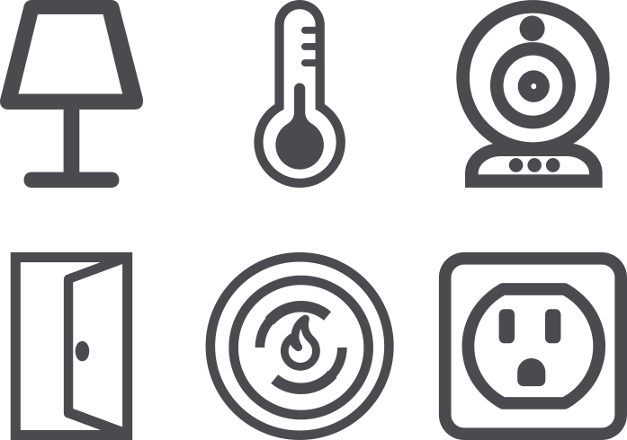

Web of Things
The Web of Things connects real-world objects to the World Wide Web.
The idea of the Web of Things is to create a decentralized Internet of Things by giving things URLs on the web to make them linkable and discoverable, and defining a standard data model and APIs to make them interoperable.
The Web of Things is intended as a unifying application layer for the Internet of Things (IoT), linking together multiple underlying IoT protocols using existing web technologies.

The Web of Things is currently undergoing standardization at the W3C, where Mozilla is a member of the Web of Things Interest Group. Mozilla’s proposal is described by the Web Thing API specification.
Mozilla WebThings
Mozilla WebThings is Mozilla’s open source implementation of the Web of Things, including the WebThings Gateway and the WebThings framework.
WebThings Gateway
WebThings Gateway is a software distribution for smart home gateways which allows users to directly monitor and control their smart home over the web, without a middleman.

It provides a web-based user interface to monitor and control smart home devices, a rules engine to automate them and an add-ons system to extend the gateway with support for a wide range of existing smart home devices.
WebThings Framework
WebThings Framework is a collection of re-usable software components to help developers build their own web things which directly expose the Web Thing API.
It includes implementations in a range of programming languages including Node.js, Python, Java, Rust and C++ (for Arduino).
You can learn more about Mozilla WebThings in our online documentation.